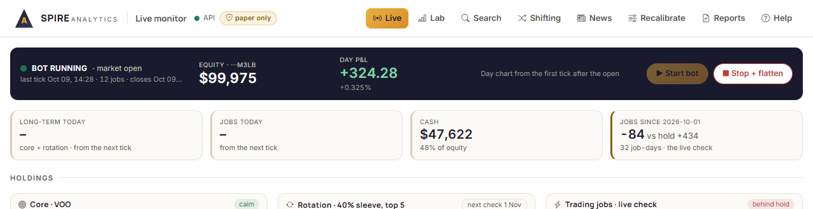
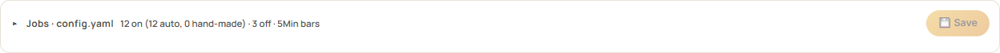
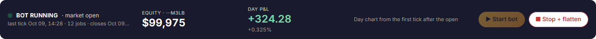
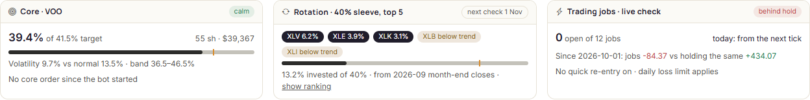
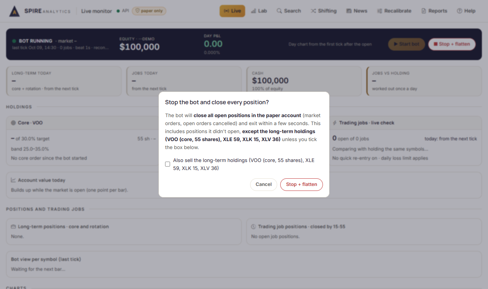
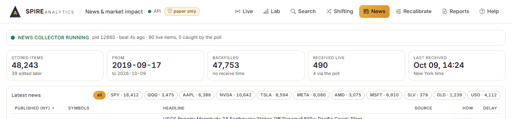
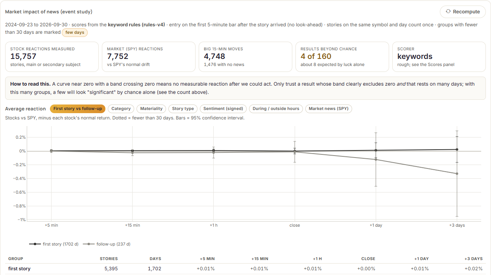
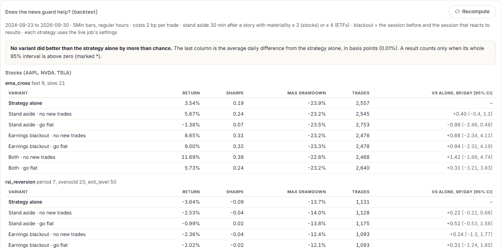
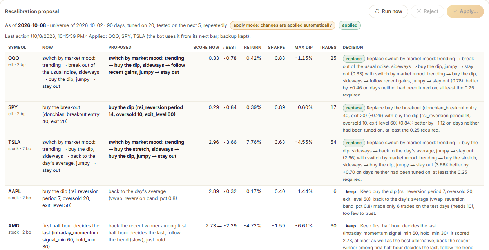

How to run the paper-trading bot
Version generated 09 October 2026 20:31 (Skopje) from the bot's code and config.yaml. If something here disagrees with the app, regenerate this document (see the end).
1. What the bot is, and what it isn't
- It trades a paper account at Alpaca: pretend money, real market prices. The code is hard-wired to paper trading; there is no switch to real money.
- It follows jobs: each job is one strategy on one or more symbols with a share of the account. It checks the market once per 5Min bar and sends market orders. Every night it re-checks which strategy each symbol should use and changes the jobs itself when something is clearly better (section 7).
- It protects itself: if the account is down 2.0% in a day it sells everything and stops for the day; no single symbol gets more than $10,000; stock positions are closed 5 minutes before the US close.
- It writes down why it acted (logs/decisions.jsonl) and produces a plain-English report after every trading day.
- Next to the trading jobs it keeps long-term holdings, overnight and through Stop: a core holding of VOO sized each morning between 15% and 45% of the account by how jumpy markets are and a rotation sleeve of 40% that holds the strongest of 11 sector funds, decided once a month (section 8). The daily loss limit and the profit lock count the trading jobs only.
- Every job's signal goes through the signal rules no quick re-entry before an order is sent (after a sale it doesn't buy back the same session unless the price beats the position's best close). The Lab and the nightly strategy check use the same rules, so their numbers compare directly.
What it can't do
- It can't predict the market or guarantee a profit. Every strategy loses in some markets.
- It doesn't trade on the news: its strategies only see prices. A separate news collector saves stories so the daily report can show them (section 6).
- It can't trade while the PC is off, asleep or offline, and it can't fix a broken internet connection.
- Market orders fill at the best available price, which can differ from the last price it saw, especially at the open and in fast markets.
- It never trades real money, and results on paper can be better than real trading would be.
2. Before the market opens
The US market opens at 09:30 New York time, which is usually 15:30 in Skopje (see the table in section 4 for the weeks when it differs).
- Switch the PC on and make sure it won't sleep: Windows Settings → System → Power → Sleep = Never (when plugged in). The bot stops trading if the PC sleeps.
- Double-click start_lab.bat in E:\autobot. Two windows open ("autobot API" and "autobot web") and the lab opens in the browser at http://127.0.0.1:5190. Leave both windows open all day.
- Open the Live page. The dark band at the top shows the bot's state, the market, the account value and the day's result. The header must say API with a green dot and paper only; if the band says reconnecting…, wait 10 seconds.
- Check the band shows the account value (Equity) in dollars.
- Scroll to Jobs · config.yaml and check which jobs are switched on and on which symbols (below). Change nothing on the day unless it was tested in the Lab first.

| Job | On? | Strategy | Symbols | Share of account per symbol |
|---|---|---|---|---|
| trend | off | ema_cross (follow the trend) | SPY, QQQ | 20% |
| reversion | off | rsi_reversion (buy the dip) | AAPL | 15% |
| crypto_breakout | off | donchian_breakout (buy the breakout) | BTC/USD | 10% |
| auto_TSLA | on | regime_switch (switch by market mood) | TSLA | 10% |
| auto_USO | on | regime_switch (switch by market mood) | USO | 10% |
| auto_AAPL | on | rsi_reversion (buy the dip) | AAPL | 10% |
| auto_SPY | on | rsi_reversion (buy the dip) | SPY | 10% |
| auto_QQQ | on | regime_switch (switch by market mood) | QQQ | 10% |
| auto_SPCX | on | regime_switch (switch by market mood) | SPCX | 10% |
| auto_AMD | on | intraday_momentum (first half hour decides the last) | AMD | 10% |
| auto_SLV | on | perf_rotation (back the recent winner) | SLV | 10% |
| auto_PFE | on | rsi_reversion (buy the dip) | PFE | 10% |
| auto_KO | on | bollinger_reversion (buy the stretch) | KO | 10% |
| auto_COST | on | rsi_reversion (buy the dip) | COST | 10% |
| auto_META | on | regime_switch (switch by market mood) | META | 10% |

Automatic start (optional)
The bot and the lab can start by themselves 2 minutes after you log on to Windows (Task Scheduler tasks Spire autobot and Spire autobot lab). Turn it on with autostart_on.bat and off with autostart_off.bat in E:\autobot; turning it off doesn't stop anything already running. Started this way, a supervisor restarts the bot after a crash (at most 3 times an hour) and writes each crash to logs/bot.log. If a bot is already running, a second one exits quietly.
3. Starting the bot
- On the Live page press ▶ Start bot (top right), or double-click start_bot.bat (this one also restarts the bot after a crash).
- Within a few seconds the band changes to BOT RUNNING with a green dot and beat 1s. The beat number must stay small (under 10 seconds).
- Wait for the first tick: within one 5Min bar, the band's last tick shows the current time and the Bot view per symbol table fills in.
- If Start is greyed out, a bot is already running (or a stuck one is still alive, shown as unresponsive). Never start a second bot.

Reading the Live page
- Tiles under the band: Long-term today (the core and the rotation sleeve), Jobs today (the trading jobs), Cash, and Jobs since ...: the trading jobs' result against simply holding the same symbols (the live check). A green or red left edge says whether that part made or lost money today.
- Account split: where the money is now (core, rotation invested and cash, jobs, free cash) against the targets.
- Three cards: the core (its share against today's target, and whether markets are calm or jumpy), the rotation sleeve (held funds; amber = in the top 5 but below its trend, so in cash; the next monthly check), and the trading jobs (ahead of hold or behind hold).
- Account value today: the day's equity (grey area) and the long-term holdings (dashed), with the fills.
- Positions come in two groups: long-term (kept overnight) and trading jobs (closed before the close).
- Bot log: errors fold into one line; details shows the full message.

Reading the trigger and peak lines
- Trigger buy / Trigger sell (Bot view per symbol, and the dashed lines on the live chart): the prices at which the bot's current strategy would change its mind at the next bar's close, one level below the price and one above, each where the strategy has one within 5%. Green 'buys below 330.30' means it would buy if a bar closes below 330.30; red 'sells below 768.96' means it would sell if a bar closes below 768.96. The percentage is how far that is from the last close, and '~3 bars if flat' how soon it changes anyway if the price just sits near that level. While the bot holds a position, the sell levels say what kind of exit they are: take profit (above the price, e.g. a mean-reversion job selling once the bounce is done), stop (below the price and the entry), or locks profit (below the price but above the entry: a trend job's exit level that has risen with the price). 'No profit target' means the strategy lets the trade run and only sells on the way down; 'no stop' means only the daily loss limit (and, for stocks, the close-out before the bell) would end a falling trade. For a short position everything is mirrored: the take profit is below the price and the stop above. For a job with an exit layer the trailing-exit level (marked 'trail') replaces the strategy's level on that side when it is nearer, and after a trailing exit the price that allows a re-entry (marked 're-entry') is the only buy level.
- 'sells at the next close unless above X' means the change happens even if the price doesn't move (for example an old price drops out of a momentum look-back); only a close beyond X would prevent it.
- '–' means no close within 5% of the last price would change the strategy's mind at the next bar.
- Peak since entry (dotted line, and 'From peak' in Positions): the best price since the bot opened the position, and how much of it has been given back.
- These lines are for reading only: the bot doesn't use them to trade, and they never change an order.
4. Stopping the bot
Normal stop
- Live page → ⏹ Stop + flatten (or double-click stop_bot.bat).
- Read the confirmation and press Stop + flatten. The bot closes every open position in the paper account (including ones it didn't open) except the long-term holdings (the core and the rotation sleeve's funds), and exits within a few seconds. Tick Also sell the long-term holdings only if you really mean to sell them too.
- Confirm all is flat (see below).

Emergency stop
- If the page doesn't respond: create an empty file named STOP (no extension) in E:\autobot. In PowerShell:
New-Item E:\autobot\STOP. The bot checks for it every few seconds, closes everything and exits; if the bot is stuck, its watchdog does the same within about 10 seconds. - If that doesn't work within a minute: on the Alpaca website (paper account) → Positions → Close all positions, then end the python … live.py process in Task Manager.
Automatic close-of-day flatten
The bot closes all stock positions 5 minutes before the US close (15:55 New York). That is usually 21:55 in Skopje, but it shifts for a few weeks when the US and Europe change their clocks on different dates:
| Dates in 2026 | Close-of-day flatten, Skopje time |
|---|---|
| 01 Jan to 07 Mar | 21:55 |
| 08 Mar to 28 Mar | 20:55 |
| 29 Mar to 24 Oct | 21:55 |
| 25 Oct to 31 Oct | 20:55 |
| 01 Nov to 31 Dec | 21:55 |
How to confirm all is flat
- Live page → Trading job positions says No open job positions (the long-term positions stay).
- The Alpaca website (paper account) shows only the long-term holdings and no open orders.
- The status shows BOT STOPPED (unless you intend it to keep running).
5. The strategies in plain words
Benchmark
Just hold it buy_and_hold
Buy once and keep holding. It is the yardstick every other strategy must beat.
Likes: Markets that rise steadily.
Hates: Long falls: it never steps aside.
Typical behaviour: No trading at all; it simply follows the market up and down.
Trend following
Follow the trend (slow) sma_cross
Own the stock while its short-term average price is above its long-term average.
Likes: Long, steady trends.
Hates: Choppy, sideways markets where the averages keep crossing.
Typical behaviour: Many small losses while waiting, a few big wins when a trend runs.
Follow the trend ema_cross
Own the stock while its fast-reacting average price is above its slower average.
Likes: Clear up-trends.
Hates: Sideways markets: it buys late and sells late, again and again.
Typical behaviour: Many small losses, few big wins. Reacts a little faster than the slow version.
Ride the momentum macd
Own the stock while its upward momentum is strengthening (MACD above its signal line).
Likes: Markets that speed up in one direction.
Hates: Flat, jittery markets.
Typical behaviour: Trades often; small losses in noise, gains when momentum builds.
Follow recent gains momentum
Own the stock while it is up over the last N bars.
Likes: Persistent trends.
Hates: Sudden reversals.
Typical behaviour: Stays in during trends, gives some back when the trend turns.
Buy the dip / mean reversion
Buy the dip rsi_reversion
Buy after a sharp short-term drop (RSI very low) and sell once the price has recovered.
Likes: Calm, sideways markets that bounce back.
Hates: Strong down-trends, where a dip keeps dipping.
Typical behaviour: Many small wins, occasional larger losses.
Buy the stretch bollinger_reversion
Buy when the price falls unusually far below its recent average and sell when it returns to the average.
Likes: Calm markets that swing around an average.
Hates: Breakouts and crashes that keep going.
Typical behaviour: Frequent small wins, rare large losses.
Buy the dip in an uptrend connors_rsi2
In a long-term uptrend (price above its 200-bar average), buy very short, sharp dips and sell on the bounce.
Likes: Rising markets with brief pullbacks.
Hates: Bear markets (it simply stays out).
Typical behaviour: High win rate, small average gain; designed for daily bars.
Buy the weak close ibs_reversion
Buy when a bar closes near its low and sell when a bar closes near its high.
Likes: Index funds in calm markets.
Hates: Trending sell-offs.
Typical behaviour: Short holding times, many small trades; designed for daily bars.
Breakout
Buy the breakout donchian_breakout
Buy when the price makes a new high for the last N bars; sell on a new N-bar low.
Likes: Strong moves that break out of a range.
Hates: Fake breakouts in sideways markets.
Typical behaviour: Low win rate, but the winners can be large.
Intraday (flat every night)
Back to the day's average vwap_reversion
Buy when the price is well below the day's volume-weighted average price and sell when it gets back to it.
Likes: Quiet trading days.
Hates: Days with a strong one-way move.
Typical behaviour: Small, frequent trades within the day.
Trade the opening break opening_range_breakout
Watch the first minutes of the day, then trade in the direction the price breaks out of that range; flat by the close.
Likes: Days with a clear direction early on.
Hates: Days that chop back and forth.
Typical behaviour: One or two trades a day, never held overnight.
First half hour decides the last intraday_momentum
If the market rose in the first half hour, hold it in the last half hour (and the reverse).
Likes: Busy, news-driven days.
Hates: Quiet days with no follow-through.
Typical behaviour: At most one short trade near the close each day.
Break out of the usual noise noise_area
Only trade when the price moves further from the open than it normally does at that time of day; exit on a trailing stop; flat by the close.
Likes: Strong trending days.
Hates: Range-bound days.
Typical behaviour: Few trades, sits out most of the day.
Strategy shifting
Switch by market mood regime_switch
Decide whether the market is trending, calm or jumpy, and hand control to the strategy chosen for that mood.
Likes: Markets that stay in one mood for a while.
Hates: Markets that flip mood constantly (switching costs).
Typical behaviour: Behaves like whichever strategy is in charge; stays flat when the market is jumpy if set to.
Back the recent winner perf_rotation
Every few bars, give control to the strategy that has done best recently.
Likes: Periods where one style keeps working.
Hates: Markets where yesterday's winner is today's loser.
Typical behaviour: Switches now and then; can sit flat when everything has been losing.
Majority vote ensemble_vote
Ask several strategies and only take the position most of them agree on.
Likes: Clear markets where signals agree.
Hates: Mixed markets, where it mostly stays out.
Typical behaviour: Fewer trades than any single strategy, smoother results.
News-aware
Step aside for news news_guard
Runs another strategy, but takes no new position for a while after an important news story on the stock, and around its earnings releases.
Likes: Markets where news days bring sudden, unpredictable swings.
Hates: Stocks whose best moves happen right after news.
Typical behaviour: Fewer trades on news and earnings days; otherwise identical to the strategy it wraps.
Market moods (regimes)
A strong trend trend
The price is moving steadily in one direction (trend strength above its threshold).
A calm, sideways market range
No strong direction: the price moves back and forth.
A jumpy, high-volatility market high_vol
Price swings are much bigger than usual for this stock.
Not enough history yet warmup
The bot needs more past prices before it can judge the market.
Shifting methods
Switch by market mood regime_switch
Each bar the bot labels the market trending, sideways or jumpy, then uses the strategy you chose for that label. A new mood must last a few bars before the bot switches, to avoid flip-flopping.
Back the recent winner perf_rotation
Every K bars the bot checks which of the chosen strategies has done best over the last N bars and hands it control. If all have been losing it can stay out.
Majority vote ensemble_vote
The bot asks every chosen strategy for its position and follows the majority; with 'average' it takes a partial position in proportion to the votes.
6. News and earnings
A separate program, the news collector, saves every Alpaca/Benzinga news story about SPY, QQQ, AAPL, NVDA, TSLA, META, AMD, MSFT, SLV, GLD, USO to data/news.db. It starts with start_lab.bat (window autobot news) or on its own with start_news.bat. It never trades, and the bot trades the same whether it runs or not; it only feeds the news sections of the reports and the News page.
Checking it runs
- News page, top line: a green dot and news collector running, with a beat a few seconds old.
- Last received shows a recent New York time while the market is open (stories arrive every few minutes on a normal day).
- The daily report warns under Things to watch if the collector wasn't receiving stories live that day.

What the reports show
- News on our symbols: for each symbol, the number of material stories, up to 5 headlines, whether it was an earnings day, and the day's biggest 15-minute move with whether a story arrived in the hour before it. That is timing only: it does not mean the story caused the move.
- News near a trade: when a material story arrived up to 60 minutes before a buy or sell, the trade's sentence names it and says it is context only.
- Small diamonds above the price charts mark material stories.
- Things to watch lists the earnings dates in the next 7 days that are listed in config.yaml.
What the scores mean
Every story gets a materiality score from 1 (routine) to 5 (major) and a category (earnings, analyst rating, macro …). Reports show stories at materiality 3 or more for companies and 4 or more for index funds (SPY, QQQ), because general market news names the index funds all day. The scores come from fixed keyword rules (rules-v4), which are rough and sometimes misfile a story. Claude (prompt v4) scored only a sample; scoring more costs money and is started from the News page, which shows the cost first.
What we found
- On days with news, prices moved 13-31% more than usual by the close (stories on analyst ratings, guidance, the economy and other news).
- Whether a story sounded good or bad did not tell which way the price would go: 0 of 12 measurements were beyond chance, no more than luck alone gives.
- After a big 15-minute move, the price kept going by the close 49% of the time with news and 49% without: about a coin flip either way.
- Pausing trading around news (the step aside for news strategy) did not do better than the strategy alone beyond chance in a backtest from 2024-09-23 to 2026-09-30, and going flat around index-fund news did slightly worse. No live job uses it.
From the news studies on the News page (2024-09-30 to 2026-10-09); this list is rebuilt from their latest results each time this document is generated.


Earnings dates
Prices often move more around a company's quarterly results. The reports, and the earnings pause in the step aside for news strategy, use the dates listed in config.yaml under news: earnings_dates; after the last listed date, dates found in the news fill in. The news alone can't be relied on to find them (it found 17 of 21 correctly in a check).
| Symbol | Last listed date | Next listed date |
|---|---|---|
| AAPL | 2026-05-01 | none: add it when announced |
| NVDA | 2026-05-21 | none: add it when announced |
| TSLA | 2026-04-23 | none: add it when announced |
- When a company announces its next results date (its investor-relations page or the news), work out the session that reacts: the same day if results come before the open, the next trading day if they come after the close (most do).
- Open config.yaml in E:\autobot with Notepad and add the date under the symbol, in the same format:
- 'YYYY-MM-DD'. - Save. Reports pick it up at the next run; the bot doesn't need a restart. Saving jobs in the lab keeps these dates.
7. Automatic strategy selection
Every night after the close the bot re-checks which strategy each symbol should trade. It changes the jobs itself (mode apply). Every symbol on the trading list is managed this way, including those that had hand-made jobs.
The trading list (universe)
Every 7 days the bot ranks the candidates of each group on how much they trade and how much they move (the last 20 trading days):
| Group | How many | Candidates |
|---|---|---|
| tech | 5-7 | NVDA, AAPL, MSFT, AMZN, META, TSLA, AMD, SPCX |
| index etf | 2 | QQQ, SPY |
| commodity etf | 2-3 | USO, GLD, SLV |
| health | 2-3 | LLY, UNH, JNJ, ABBV, MRK, PFE |
| staples | 2-3 | WMT, COST, KO, PEP, PG, MCD |
| crypto | 1-2 | BTC/USD, ETH/USD |
A symbol already on the list stays until it drops more than 2 places below the cut, so the list doesn't change for small moves. The trading figures come from the free IEX feed, which sees only part of the market: they are only used to compare symbols with each other.
The nightly check (recalibration)
- For each symbol, every strategy and setting is tested on the last 90 days in turns: tuned on 20 days, then tried on the next 5 days it had not seen. Costs are included (2 bp a trade for stocks, 30 bp for crypto), and stocks are sold before the close, like the bot does.
- It also builds 'switch by market mood' and 'back the recent winner' combinations from the best 3 strategies.
- Each option gets a score from the test days only (Sharpe, return, deepest dip and trading). Doing nothing scores 0.
- A new strategy replaces the current one only if it scores at least 0.25 better, made 10+ trades, the current one has been in place 5+ days, and the symbol hasn't already changed 1 time in the last 7 days. A symbol where nothing beats doing nothing gets no job.
Every decision has a plain-English reason, shown on the Recalibrate page and in the next daily report (Strategy changes).

When changes take effect
- Stock jobs change only while the market is closed (the bot holds no stocks overnight), so a change starts at the next open.
- A crypto job changes only when the bot holds none of that coin; until then it shows as waiting to apply.
- The new settings are checked first; if they fail, nothing is written. A copy of the old config.yaml is kept in data\recalibration\config_backups.
- A symbol that leaves every job has its position closed by the bot.
Exit layer (trailing exit and re-entry)
Now: off for every job. An optional layer on top of any job's strategy, switched on per job in config.yaml (an exit: block under the job). While the bot holds a position it remembers the best closing price since it bought; if a 5-minute bar closes more than trail_pct % below that, it sells, even if the strategy still wants to hold.
- After such a sale it stays out until the re-entry rule allows a new buy, and never on the very next bar: fresh_cross the strategy has to go out and back in; new_high a bar closes above the price it sold from while the strategy still wants in; both whichever comes first; cooldown wait a number of bars, then follow the strategy.
- Two more optional rules, each measured from the price when the position was opened:
take_profit_pctsells once a bar closes that % above it (takes the profit),stop_pctsells once a bar closes that % below it (cuts the loss). For a short both are mirrored. After either, the re-entry rule applies as after a trailing exit. Off unless set; any of the three switches the layer on. - no_entry_last_min: no new stock positions in the last N minutes before the close (positions already held are kept until the close).
- The backtests, the Lab, the nightly check and the bot all use the same code for this, so the bot does exactly what was tested. Each sale or wait is explained in the decision log and the daily report, for example 'Sold: price 763.05 fell 0.29% from the 765.27 high since entry (trail 0.25%).'
- Lab → Exit rules compares the jobs without the layer and with every setting on the last 90 days, including a walk-forward test on days the setting was not chosen on. Only switch it on if that walk-forward result beats 'none'.
- The nightly check can also try exit settings for each symbol (
recalibration: include_exit: true, off by default).
To switch it on for a job, add under that job in config.yaml (the bot uses it from its next bar):
exit: {trail_pct: 0.25, reentry: both, cooldown_bars: 6, no_entry_last_min: 30}
Position size
Now: fixed. Each symbol gets its job's share of the account, at most $10,000. All jobs together never get more than 100% of the account (risk: max_gross_pct): if their shares add up to more, every symbol is scaled down alike, so the bot never trades on borrowed money. The other mode is available in config.yaml (risk: sizing); compare it in the Lab first.
Core holding
Now: on. When on, the bot holds VOO long term as 30% of the account, outside the trading jobs: it buys up to that share at the first check of a trading day and trades it again only if its share drifts more than 5 points away. It is not sold before the close, and the daily loss limit and profit lock count and sell the trading jobs only. Stop + flatten keeps it unless you tick Also sell the core holding. Switched on or off in config.yaml (live: core: enabled); the bot picks the change up at its next bar. Why a plain hold and no timing rule: docs/CORE_DESIGN.md.
Profit lock
Off. When switched on (risk: profit_lock: enabled: true), once the day's gain reaches 1.5%, a fall of more than 50% from the day's best makes the bot sell everything and stop for the day. The Lab page (Account rules) shows what it would have done on recent prices.
8. Long-term holdings: the core and the rotation sleeve
Most of the account's result is meant to come from two long-term holdings. They are decided at the first tick after the open, kept overnight, never sold by the close-of-day flatten, the daily loss limit or the profit lock, and kept by Stop + flatten unless you tick Also sell the long-term holdings. The nightly strategy check never touches them.
The core: VOO
- Normally 30% of the account. Each morning the target becomes 30% x normal volatility / today's volatility, kept between 15% and 45%: calmer markets → a bigger core, jumpier markets → a smaller one (volatility = an exponentially weighted average of daily moves; normal = its median over the last 5 years).
- It trades only when its share is more than 5 points away from the target, about 10 times a year.
- Why: in the backtests (2019-2026) this roughly halved the losses in the 2020, 2022 and 2025 drops for about half a point a year less in normal years (docs/STRATEGY_EVIDENCE.md sections 12 and 15).
The rotation sleeve: 40% in sector funds
- Once a month (first open tick of the month) it ranks the 11 sector funds (XLK, XLV, XLE, XLF, XLI, XLY, XLP, XLU, XLB, XLRE, XLC) by their return from 12 month-ends ago to the last-but-one month-end, and holds the top 5, but only those above their 10-month average.
- Each fund is sized by how jumpy it is (at most 8% of the account); money not placed stays in cash. On the Live page amber chips mark funds in the top that are below their trend.
- It trades a fund only when it is more than 1 point(s) away from its target.
- Why: over 1927-2026 industry rotation earned about the market's return with half the ups and downs and a third of the worst drop; since 1999 the gain is smaller, and over 2017-2026 it trailed simply holding SPY (sections 23-24). It is a risk reducer, not a promise of more return.
How the daily report judges them
The report's Where the result came from table compares each part with its fair yardstick: the core with keeping the shares it had at the start, the rotation with an equal mix of all sector funds with the same money, the trading jobs with holding the same symbols, and the whole account with SPY at the share actually invested.
9. What to watch: daily checklist
Look at the Live page a few times a day and read the daily report after the close. green = fine, amber = keep an eye on it, red = act now.
| Check | Green | Amber | Red: what to do |
|---|---|---|---|
| Day P&L vs the daily loss limit | above -1% | -1% to -1.6% | below -1.6% or the bot halted: the limit (2.0%) will stop it; don't restart it the same day |
| Deepest dip this week (weekly report) | less than 2% | 2% to 4% | more than 4%: review the strategies (section 11) |
| Number of trades vs a normal day | similar to the last 5 reports | twice as many or none at all | many times more: check the log and the jobs; stop the bot if unsure |
| Errors in the bot log (Live page) | none | an occasional data error (the bot skips that bar) | errors every bar, or CRITICAL/WATCHDOG lines: see troubleshooting |
| Last tick / heartbeat | last tick within one 5Min bar; beat under 10 s | last tick 1-3 bars old | heartbeat over 90 s, status 'unresponsive', or last tick more than 3 bars old: stop and restart |
| Strategy switching (reports, Shifting jobs) | 0-4 switches a day per symbol | 5-8 a day | more than 8 a day: switching costs money; test a larger confirm_bars in the Lab |
| A symbol stuck in a position | positions change when signals change | an intraday strategy still holding late in the day | a position held with no job on that symbol: close it on the Live page or the Alpaca website |
| Nightly strategy check (Recalibrate page) | the proposal date is the last trading day; status applied (or nothing to change) | items waiting to apply for more than a day (a coin position that never closes) | Last automatic run failed: read the message; the bot keeps yesterday's jobs. Press Run now once the cause is fixed |
| Long-term holdings (Live page cards) | core share inside its band; rotation holdings as last month | the core outside its band for a whole day (it rebalances at the next open) | a long-term fund sold during the day, or held funds missing: check the log for CORE / ROTATION lines |
| Trading jobs vs holding (Jobs tile, report) | about level with holding the same symbols | behind holding for a week | far behind for several weeks: consider switching the jobs off (they are a live check, not the main return) |
| News collector (News page, top) | news collector running, last story received within the hour during market hours | nothing received for 1-2 hours while the market is open | stopped, or the daily report says it wasn't receiving stories live: double-click start_news.bat (trading isn't affected) |
10. Troubleshooting
| Symptom | Likely cause | What to do |
|---|---|---|
| Header shows API down | The 'autobot API' window was closed or crashed | Run start_lab.bat again. The bot keeps running on its own; check it on the Live page. |
| Live page says reconnecting… | The API is restarting or not running | Wait 10 seconds; if it stays, run start_lab.bat. |
| Status unresponsive | The bot process is alive but hasn't beaten for 90 s (stuck) | Press Stop + flatten. If nothing happens within a minute, use the emergency stop. The watchdog also exits a bot stuck for 300 s. |
| Bot stopped by itself | Daily loss limit, a stall, or the PC slept | Read the bot log tail on the Live page (look for FLATTEN, WATCHDOG, CRITICAL). Restart only if you understand why. |
| Start refused: 'already running' | A bot is still running | Don't start another. Stop the running one first if needed. |
| Jobs editor won't save | A rule was broken (message in red), e.g. one symbol in two jobs | Fix what the message says, then Save. |
| No orders all day | Market closed, signals said 'stay out', or the allocation buys less than 1 share | Check the Bot view per symbol table (signal and target) and the reasons in the daily report. |
| Report says reason not recorded | The trade happened while an older bot version without the decision log was running | Nothing to fix; new trades will have reasons. |
| No daily report | The lab wasn't running 10 minutes after the close | Reports page → pick the date → Generate. |
| 'data/signal error' lines in the log | Internet or Alpaca data problem | The bot skips those bars. If it lasts, check your connection and Alpaca's status page. |
| News page says news collector stopped | The 'autobot news' window was closed, or the PC slept | Double-click start_news.bat. It fills in the stories it missed, then collects live again. Trading is not affected. |
| Report's news section says No news database yet | The news collector has never run on this PC | Double-click start_news.bat and leave it running; the first start downloads two years of stories (a few minutes). |
| Report says a story was 'filled in afterwards' | The collector wasn't running live that day; it caught up later | Nothing to fix for that day; keep the 'autobot news' window open on trading days. |
| A symbol from the trading list has no job | On the test days nothing beat doing nothing (or too few trades) | Nothing to fix: the reason is on the Recalibrate page. It is re-checked every night. |
| You want to undo a strategy change | The nightly check switched a job you preferred | Copy the newest file from data\recalibration\config_backups over config.yaml (the bot uses it from its next bar), then set recalibration: mode: propose so it isn't changed again tonight without your Apply. |
| Account result in a report looks far too big | The broker's history counted a deposit (it does this in a paper account's first days) | The report leaves out jumps over 10% in 5 minutes and says so in a note at the top; if there is no note, check the Alpaca website. |
11. Weekly review
- Reports page → Last 7 days. Read the headline, then the charts.
- Check the report's Where the result came from table: the core against keeping its shares, the rotation against an equal mix of all sector funds, the trading jobs against holding the same symbols, and the whole account against SPY at the share invested. Then the number of trades, the worst trade, the deepest dip, and the 'What didn't' list.
- Compare with the last few weeks' reports; one bad week alone says little.
- Earnings dates: if a company we trade has announced its next results date, add it to config.yaml (section 6, Earnings dates).
- Recalibrate page: how many strategy changes happened this week and why (the reasons are on the page and in the daily reports). Several changes on the same symbol week after week means no strategy works well there; consider leaving it out of the trading list.
When to change or switch off a strategy
- It trailed simply holding SPY for three weeks in a row while trading a lot.
- Its deepest dip in a week was more than 4%.
- Remember the Lab's backtests use the same signal rules as the live jobs (shown at the top of each Lab page), so they compare directly.
- The report keeps saying 'many small losses in a sideways market' for a trend strategy (or the reverse for a dip-buying strategy).
- It switches strategies more than 8 times a day on a symbol, week after week.
Always test a change in the Lab first: Lab → run it on Alpaca data (at least 90 days), then Search → Walk-forward. Only change the live job if the walk-forward result is better than what runs today. Change one thing at a time, and note the date so the reports can be compared.
Keeping this document up to date
Run python scripts/build_sop.py --shots with the lab running. It re-reads the strategies, limits, jobs and times, takes fresh screenshots and rebuilds this document (Markdown, HTML and PDF).